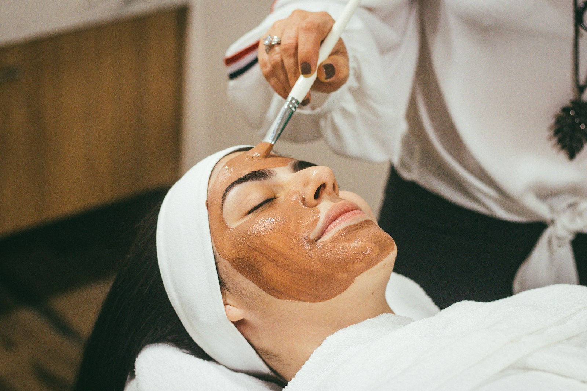

Chemical peel
A controlled peel that calms acne, evens tone and renews skin.
Controlled medical peels that calm acne, lift tan and pigmentation, and renew dull skin, usually with little or no downtime.

A peel is a medical procedure, not a facial. The right acid and strength depend on your skin, so we choose it at your consultation.
Salicylic, glycolic, lactic and combination peels each suit different skin and goals.
A short routine for a week or two before your first peel.
Applied and timed in clinic, then neutralised. Mild tingling is normal.
Light flaking for a few days at most. Sunscreen is essential.
Real patients, photographed in clinic. Drag the handle to compare.
A controlled peel that calms acne, evens tone and renews skin.


Inflamed acne cleared with oral and topical treatment plus peels.
Individual results vary. Photos used with patient consent.
Timelines are typical. Your doctor confirms your exact plan after examining you.
Most medical peels cause light flaking for 2 to 4 days at most. Many cause none at all.
Yes, with strict sun protection. Your doctor may choose a gentler peel.
Often yes, with a mild peel and proper prep. We decide after examining your skin.
Book a consultation in under a minute, or message the clinic team on WhatsApp. We reply during clinic hours.